2026년 8주차 세미나 발표
시각장애인이 식당에서 테이블 위의 음식 종류와 위치를
스스로 파악할 수 있도록 돕는 AI 분류 서비스를 제안합니다.
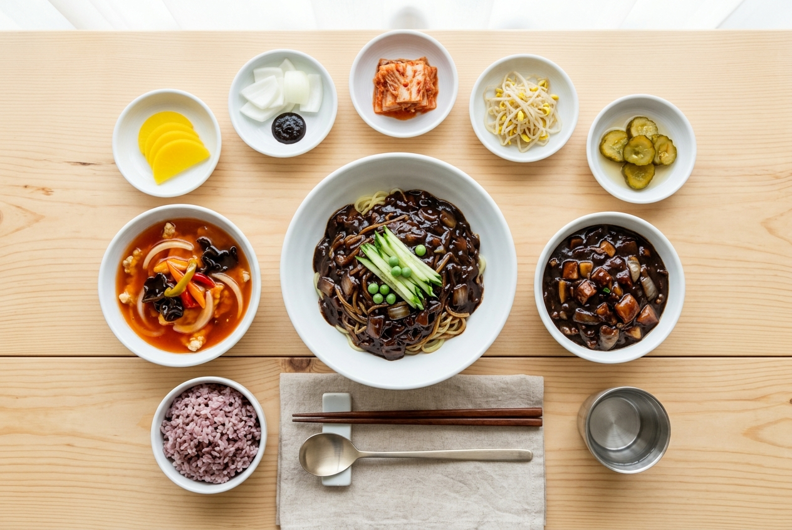
주제 선정 배경
01
시각장애인은 식당에서 테이블 위에 놓인 반찬과 소스 등의 종류와 위치를 파악하기 매우 어렵습니다. 음식을 직접 먹어보거나 주변 사람에게 확인해야 하는 불편함이 발생합니다.
02
AI 분류 서비스로 음식의 종류를 자동으로 인식한다면 이러한 불편함을 크게 줄일 수 있다고 판단했습니다. 시각장애인의 식당 이용 편의성을 높이기 위해 이 주제를 선정하였습니다.
03
기존 유사 서비스를 조사한 결과, 정확도가 떨어지며 음식이 어디에 위치해 있는지는 알려주지 않는 한계가 있었습니다.
차별화 포인트
01
음식점에서 제공하는 메뉴, 반찬, 소스 목록을 사전에 등록하여 해당 음식점에 등록된 음식으로만 분류 범위를 제한합니다. 불필요한 오인식 가능성을 줄이고 맞춤형 서비스를 제공합니다.
02
단순히 음식의 종류뿐만 아니라 어디에 있는지까지 안내합니다. 시각장애인이 음식의 위치를 직접 찾는 데 필요한 정보를 함께 제공합니다.
| 항목 | 기존 유사 서비스 | 제안 서비스 |
|---|---|---|
| 분류 범위 | 모든 음식 (무차별) | 음식점 등록 메뉴 한정 |
| 정확도 | 낮음 | 맞춤형으로 향상 |
| 위치 안내 | 미제공 | 위치 정보 포함 |
| 접근성 | 일반 사용자 위주 | 시각장애인 특화 |
학습 실험
Google의 Teachable Machine을 활용하여 중화요리 음식점의 4가지 음식을 분류하는 모델을 직접 학습하고 실험했습니다. 클래스별 샘플 수, Epochs, Batch Size를 다양하게 조절하며 결과를 비교하였습니다.
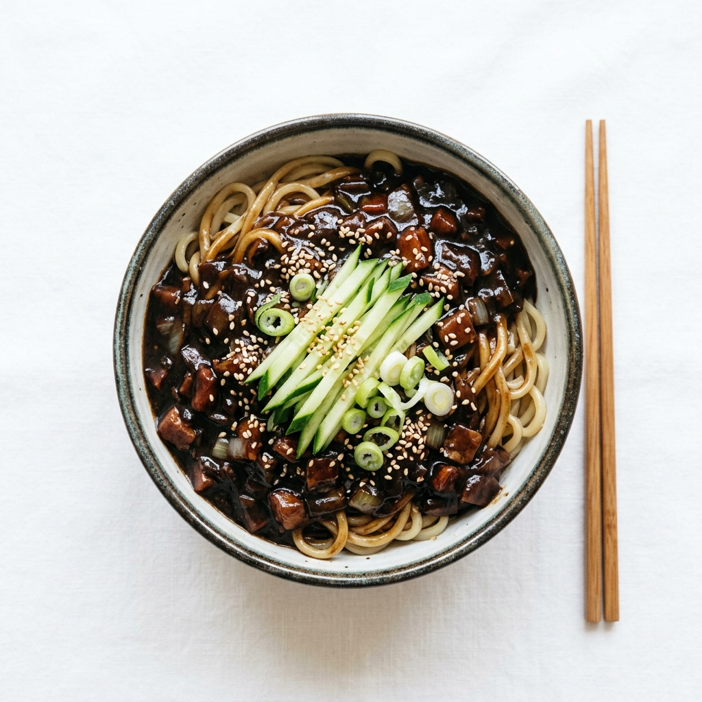
짜장면 (Class 1)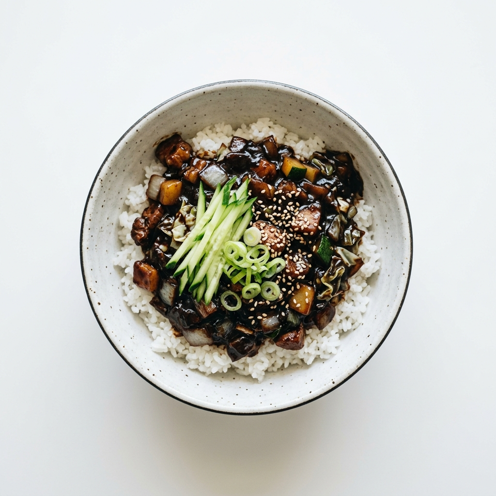
짜장밥 (Class 2)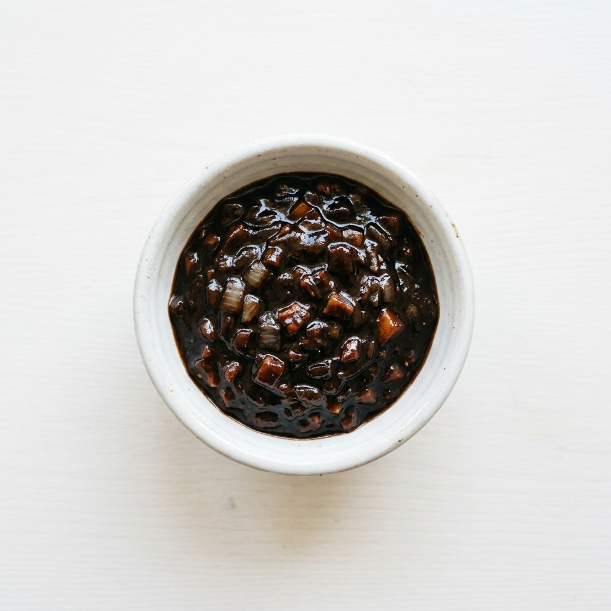
짜장소스 (Class 3)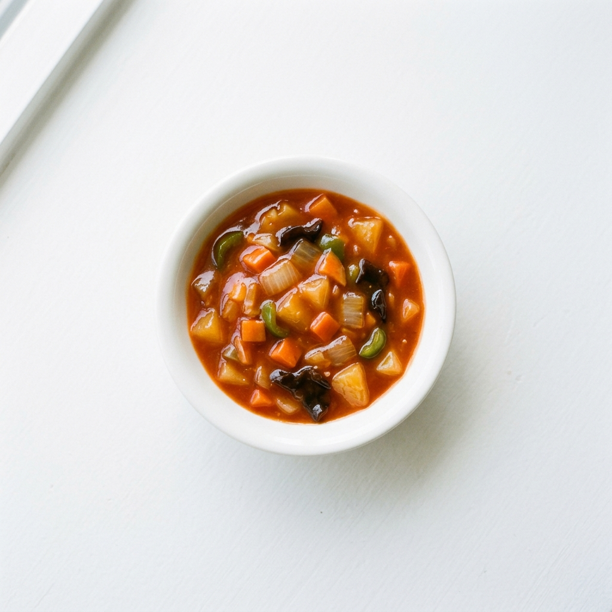
탕수육소스 (Class 4)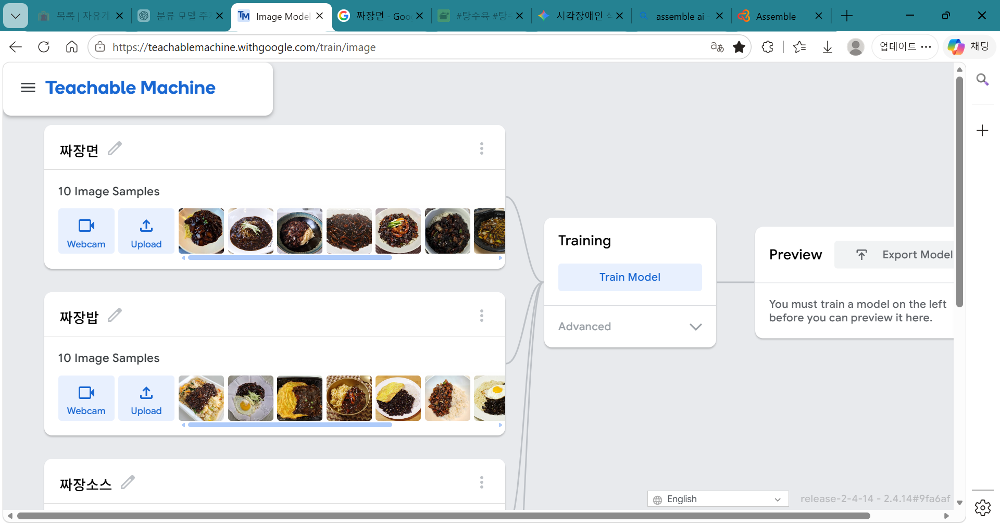
클래스별로 웹캠/업로드를 통해 10~20개의 음식 이미지를 등록하고 모델을 학습시키는 과정
Teachable Machine은 이미지 분류(Classification) 학습 도구로, 음식의 종류를 구분하는 것은 가능합니다. 그러나 카메라 화면 내에서 각 음식이 어느 위치에 있는지를 감지하는 기능은 지원하지 않습니다. 위치 정보까지 제공하려면 객체 탐지(Object Detection) 기술로의 업그레이드가 필요합니다.
| 파라미터 | 설명 | 실험에서 사용한 값 |
|---|---|---|
Epochs |
전체 데이터를 몇 번 반복 학습할지 | 10 → 200 → 350 → 500 |
Batch Size |
한 번에 몇 개의 데이터를 묶어 학습할지 | 16 / 32 / 64·128 비교 |
Learning Rate |
틀린 답을 학습할 때 얼마나 많이 수정할지 | 기본값 사용 |
| 샘플 수 | 클래스당 학습 이미지 개수 | 10개 → 20개로 증가 |
실험 결과
클래스당 10개의 이미지만으로 학습했을 때 제대로 된 분류가 되지 않았습니다. 데이터 부족으로 인해 짜장면 사진을 넣었음에도 짜장밥 50%, 짜장소스 26%, 짜장면 20%로 오분류되었습니다.
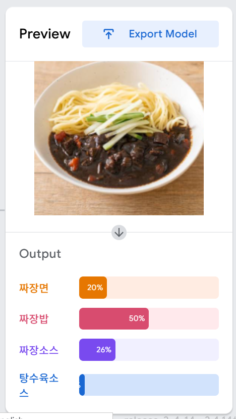
실제 테스트 화면클래스당 10개의 데이터를 추가하여 총 20개로 늘렸더니 정답률이 84%로 크게 증가하였습니다. 데이터 양이 분류 성능에 직접적인 영향을 미쳤습니다.
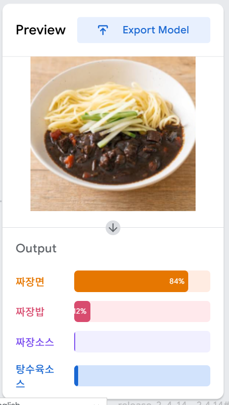
실제 테스트 화면과적합(Overfitting)을 유도하기 위해 Epochs를 200으로 높였습니다. 예상과 달리 과적합이 발생하지 않고 짜장밥 테스트 시 100% 정답률을 기록하며 성능이 더 향상되었습니다.
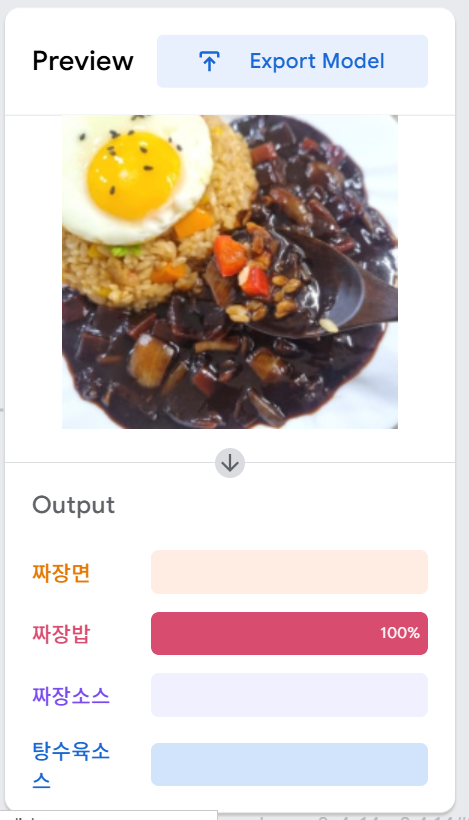
실제 테스트 화면Epochs를 350으로 더 높였을 때 정답률에 편차가 나타나기 시작했습니다. 특정 클래스 판별 시 미세한 신뢰도 변동이 발생했습니다.
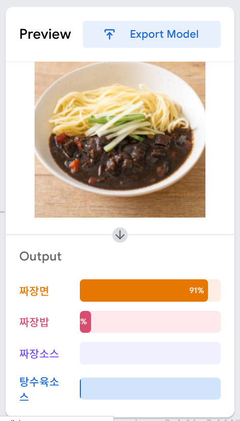
실제 테스트 화면최종적으로 Epochs 500에서 4개의 클래스 중 하나의 확실한 답(짜장면 90%)을 골라내는 성능을 달성했습니다. 모델이 데이터를 충분히 학습하여 명확한 분류가 가능해졌습니다.
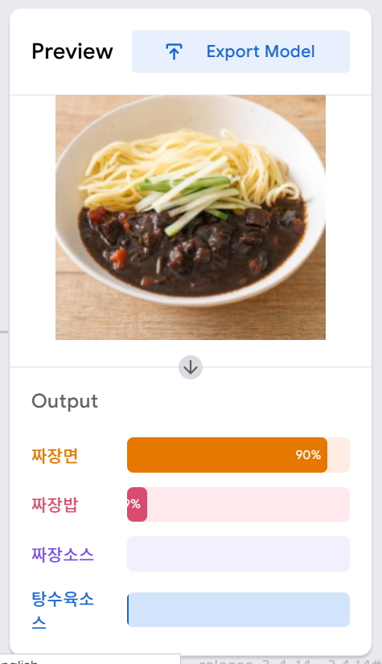
실제 테스트 화면데이터 수를 늘리고 Epochs를 충분히 높이는 것이 분류 성능 향상에 직결됩니다. 소량의 데이터(클래스당 20개)로도 Epochs 조절을 통해 유의미한 분류 결과를 얻을 수 있었습니다.
느낀점
제작자 정보
한예은
인공지능학과 · 중부대학교 고양캠퍼스
AI 기술을 사회적 접근성 향상에 활용하는 것에 관심을 가지고 있습니다. 이 웹페이지는 2026년 8월 25일 세미나에서 발표한 내용을 바탕으로 제작되었습니다.
왜 이 주제를 선택했나요?
평소 접근성과 기술의 교차점에 관심이 있었습니다. 유튜브에서 시각장애인이 식당에서 겪는 어려움을 담은 영상을 보면서, 이 문제를 AI로 해결할 수 있겠다고 생각했습니다. 단순히 음식이 뭔지 알려주는 수준을 넘어, 실제로 누군가의 일상을 바꿀 수 있는 기술을 만들고 싶었습니다.
실험하면서 가장 놀라운 점은?
과적합을 유도하려고 Epochs를 200으로 높였는데 오히려 성능이 더 좋아졌습니다. 교과서적으로 Epochs가 너무 높으면 과적합이 일어난다고 배웠지만, 실제 소규모 데이터에서는 데이터 다양성 부족이 더 큰 문제임을 직접 확인할 수 있었습니다.
앞으로 발전시킨다면?
Teachable Machine은 이미지 분류(Classification)만 가능하기 때문에, 음식이 화면의 어디에 위치하는지는 알 수 없습니다. 실제 서비스로 발전시키려면 YOLO나 SSD 같은 객체 탐지(Object Detection) 모델로 업그레이드하여 음식의 종류와 위치를 동시에 인식할 수 있도록 할 계획입니다.